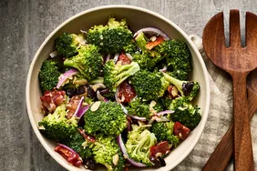

Broccoli Salad Recipe

Back to Homepage
Description
This summery broccoli salad uses a tasty combination of vegetables, fruit, nuts, and bacon. Before you decide you won't like it, try it. You'll be pleasantly surprised.
Ingredients
- 1⁄2 pound bacon
- 2 heads fresh broccoli, cut into bite-sized pieces
- 1 small red onion, sliced into bite-sized pieces
- 3⁄4 cup raisins
- 3⁄4 cup sliced almonds
- 1 cup mayonnaise
- 1⁄2 white sugar
- 2 tablespoons white wine vinegar
Steps
- Gather all ingredients.
- Place bacon in a deep skillet and cook over medium-high heat until evenly brown, 7 to 10 minutes; drain, cool, and crumble.
- Combine bacon, broccoli, onion, raisins, and almonds together in a bowl; mix well.
- To prepare the dressing: Mix mayonnaise, sugar, and vinegar together until smooth.
- Stir into the salad.
- Let chill before serving, if desired. Enjoy!
Nutrition Facts
- Calories: 374
- Fat (g): 27
- Carbs (g): 29
- Protein (g): 7